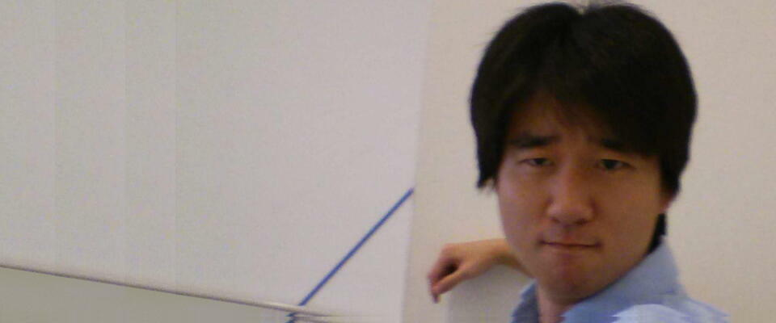
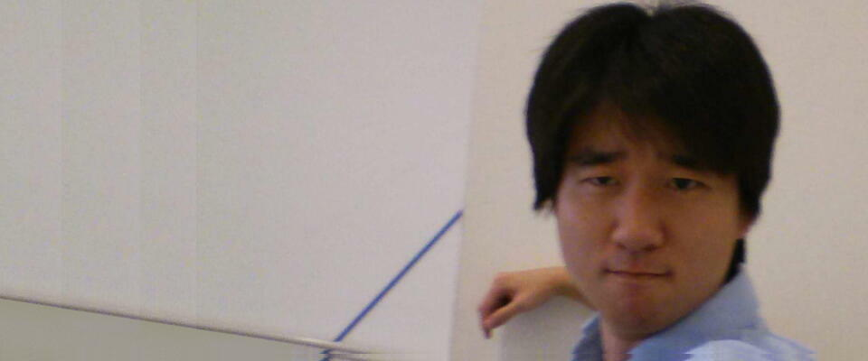

北里柴三郎の紹介
 プロフィール
プロフィール
日本の医学者・細菌学者である。従二位・勲一等旭日大綬章・男爵・医学博士。
私立伝染病研究所（現在の東京大学医科学研究所）創立者兼初代所長、土筆ヶ岡養生園（現在の北里大学北里研究所病院）創立者兼運営者、第1回ノーベル生理学・医学賞最終候補者（15名の内の1人）、私立北里研究所（現在の学校法人北里研究所）創立者兼初代所長並びに北里大学学祖、慶応義塾大学医学科（現在の慶應義塾大学医学部）創立者兼初代医学科長、慶應義塾大学病院初代病院長、日本医師会創立者兼初代会長。
「日本の細菌学の父」として知られ、ペスト菌や破傷風の治療法を発見し、医学の発展に貢献。門下生からはドンネル先生との愛称で畏れられ、かつ親しまれていた。
彼から、クリエイターを目指す君へのメッセージ
「研究だけをやっていたのではダメだ。それをどうやって世の中に役立てるかを考えよ。」
「君、人に熱と誠があれば何事でも達成するよ。よく世の中が行き詰まったと云う人があるが、是は大いなる誤解である。世の中は決して行き詰まらぬ。若し行き詰まったものがあるならば、これは熱と誠がないからである。」


 
